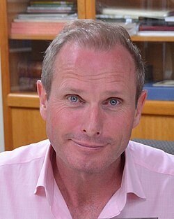

Ross Coulthart
Australian investigative journalist

An award-winning Australian investigative reporter who turned to UFOs with his 2021 book In Plain Sight, and in 2023 conducted David Grusch's first television interview, for NewsNation. 1
Open in the interactive Watcher
Related
- In Plain Sight In Plain Sight, 2021
- House UAP hearing Grusch's 2023 testimony
Sources
- Ross Coulthart Wikipedia